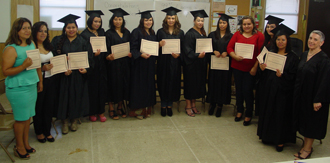
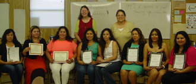

Advocacy Outreach Celebrates the End of our 2013-2014 Family Literacy Program!
This is our Best year Ever with nine women graduating our Advanced ESL class! All students made wonderful gains in their classes, both beginning and advanced as well as their children who were enroled in our Early Childhood Development Center!
With hard work and regular attendence, each student completed nessecary lessons which transformed them to be able to speak English, making them bilingual. Being able to speak both languages here in Texas, makes them available for many job opportunities, advancements in education, to guide their children with homework and many wonders. With the excellent instructors, Carol Joseph for advanced ESL and Tony Aguirre for the beginning ESL, each student progressed through the cirriculum at their own pace.
Our Early Childhood Development Center provides fun education for many of these women's young ones, which many will now move forward in to Pre-K and Kindergarten!
Graduating Students!
From left to righ; Carol Joseph, instructor with Olga Sandoval, Claudia Juarez, Catalina Gonzalez, Sandra Guevara, Miriam Garcia, Ofelia Moctezuma, Herminia Suarez, Irene Huerta, Veronica Rivera.
Advanced English as a Second Language Class

Congratualtions to all of these wonderful students who finished the Advanced ESL class!! You are bilingual now!!! From left to right, Paula Valente, Alma Parra, Claudia Juarez, Miriam Garcia, Sandra Guevara, Herminia Suarez, Catalina Gonzalez, Irene Huerta, Veronica Rivera, Clara Aguirre, Olga Sandoval, Ofelia Moctezuma and Carol Joseph, instructor.
Beginning English as a Second Language Class

Congratulations to all of these wonderful students who finished the Beginning ESL class!!!! Thank you for all your hard work!
Top row from left to right, Beth Rolingson and Toni Aguirre, instructor. Bottom row, Azucena Blas, Josefina Valor, Maria Ponce, Maria Elena Garcia, Angelina Escobar, Paula Valente, Gabriela Veliz & Neris Arce (not pictured: Alejandra Aviles, Maria Cristina Rodriguez, Juana Roman)Instructor Haley Brian and Director Ethel Ellis handing out certificates and school suppies to our ECDC students!
Congratulations!